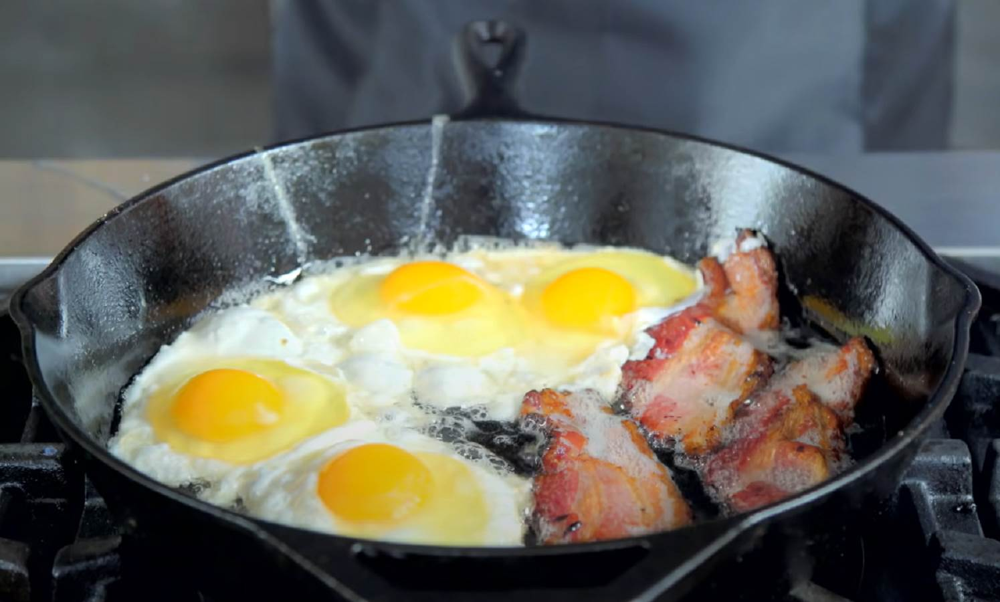

Jaja sa slanina

Ako trenirate i zeliet da budete veliki, jaki, brzi i spretni
kao Maras, ovo je savrsen obrok za vas
Potrebni sastojci
- 4 jaja
- 60 grama slanine
- Mast
- Leba
Nacin pripreme
- Staviti kasikicu masti u tiganj i podgrejati na rerni
na najjace dok se mast ne istopi
- Za to vreme iseckati slaninu kao na slici iznad
- Kada se mast istopila i zagrejala, staviti
slaninu i obe strane peci po minut ipo
- Kada se slanina ispekla, izvaditi je i staviti 4 jaja na oko
i po zelji preklopiti poklopcem
- Peci jaja neka 2 do 2 ipo minuta i izvaditi ih i posluziti
zajedno sa slaninom i lebom
- Pojesti